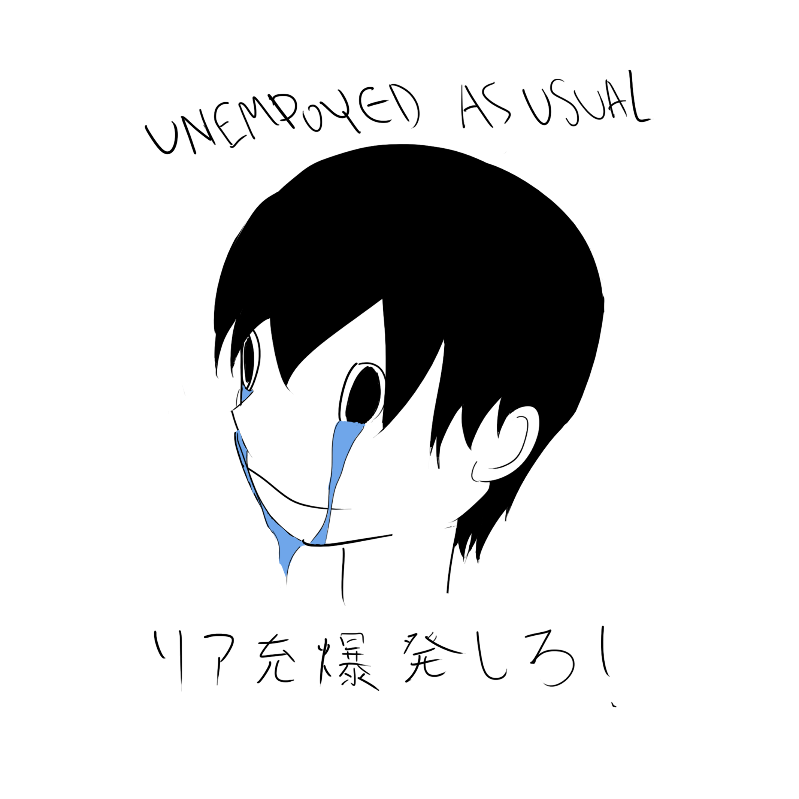

Since I'm unemployed this summer (unsurprisingly), here is a list of things I plan to work on over the next three months, mostly to keep myself accountable.
I plan to update at the end of the summer to see how much progress I've made.
- Finish NieR:Automata and other games
- Finish A First Course in Graph Theory in preparation for the fall and possibly start reading Afternotes on Numerical Analysis
- Start a database on various types of graphs and Markov chains, making notes on spectral properties
- Create a program for visualizing Markov chains (this has been done before, at least for DTMCs, so extend to CTMCs)
- Create a game involving M/M/s queue, this should be fun
- Start reading up on quantum computing
- Read Proofs from THE BOOK
- Continue reading Japanese grammar guide and IMABI
- Do a lot of LeetCode problems
- Don't forget to drop COMM107 to avoid Zoom speeches
- Learn to draw at an acceptable level, learn how to use Unity, maybe exercise a little